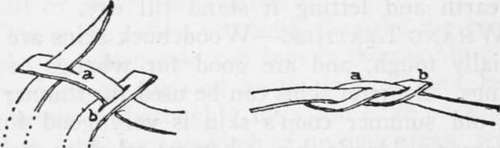

Trophies. Pelts, Buckskin And Rawhide. Part 6
Description
This section is from the book "Camping And Woodcraft", by Horace Kephart. Also available from Amazon: Camping and Woodcraft.
Trophies. Pelts, Buckskin And Rawhide. Part 6
A convenient way of making a stretching frame in the woods is to go where two trees grow at the right distance apart; notch them at the proper height to receive a strong, stiff sapling that has been cut to fit the notches, the deep cut of the latter being at the lower side so that no force can pull the pole down; similarly fit another pole into reversed Jiotches just above the ground; cut slits in the edges of the hide and fiom them stretch thongs or very strong cords to the trees and poles, twisting them up tightly.
Parfleche
The plains Indians used to make rawhide trunks or boxes which would stand any amount of abuse in packing and travel. These were called by the voyageurs parfleche. (Our dictionaries surmise that this is a French adaptation of some Indian word, but it is simply Canadian-French, meaning an arrow-fender, because it was from rawhide that the Indians made their almost impenetrable shields. The word is commonly pronounced by Americans "par-flesh," with the accent on the last syllable.) In making these rawhide receptacles the thickest hides of buffalo bulls were dehaired, cut into the required shapes and stretched on wooden forms to dry; they then retained their shapes and were almost as hard as iron. A hide bucket can be made by cutting off from the rawhide some thin strips for lacing, soaking the skin until it is quite soft, shaping from it a bag, sewing this up with the lace-leather, fitting to it a handle of twisted or plaited hide, then filling the bucket with dry sand or earth and letting it stand till dry.
Whang Leather
Woodchuck skins are proverbially tough, and are good for whangs or shoestrings. Squirrel skins can be used for thinner ones. An old summer coon's skin is very good for this purpose; wildcat's skin is better; eel skins make the strongest of all whangs.
Whang-leather is prepared just like rawhide, but the thongs are cut out before softening. It is common practice to tan the leather with alum, but this is objectionable for reasons given in the next chapter. Many farmers "tan" small skins for whang-leather by putting them in a tub of soft soap; or dissolve a bar of shaved-up laundry soap in a pail of hot water, let it cool, soak the skin in this solution un til you can squeeze water through it, then wring it out, work by hand until dry, and finally smoke like buckskin. But such leather is of inferior strength, as the alkali weakens the fibers; it remains slippery; and it draws dampness till it rots. Plain rawhide, suppled with grease or oil, is stronger than any tanned leather.
Lace-leather is cut of uniform width by the following means. With a pair of compasses (a forked stick with pencil or metal scoring point attached to one leg will serve) draw a circle on a piece of hide; cut out this round piece with a keen knife; make a starting cut of the desired width on the edge of the circular piece of hide. Drive an awl or a slender round nail into a board, and alongside of it, at precisely the width of the lace, stick the knife, edge foremost, and inclining a little to the rear; then lay the round bit of hide in front of the knife, draw the cut strip between the awl and the knife and steadily pull away; the round leather will revolve as the knife cuts its way, and the awl, acting as a guage, will insure a uniform width of lacing. The same method is used in cutting shorter thongs from the side of a skin or piece of leather.
How to splice thongs is shown in Fig. 185. Cut a slit in the end of each, a little longer than width of thong, slip b over a, bring end of b up through the slit in a, and draw tight.
Fig. 185. Splicing thongs.
A. Riata
To make a rawhide riata: select carefully skinned hides that have no false cuts in them. A 30-foot riata will require two large cowhides if it is to be made three-stranded, or fou ' small ones if four-stranded. Having removed the hair, stake the hides out on level ground, keeping them well stretched and constantly wetted so as not to harden; keep them pegged out two days. Cut up the hide in the manner of laces, the width of the strip not exceeding one-half inch; wet each strip, when cut, and wrap it around a stick; then fasten the strips to a tree and plait them to a uniform circumference and tightness of twist. Keep the strands and plaited portion wet; a Mexican fills his mouth with water which he squirts over the work and materials. When the rope is finished, stretch it thoroughly, and then grease it. To preserve its pliability, keep it continually greased.
Catgut
The catgut of commerce is never made from cats, any more than chamois skin is made from chamois; but it can be made from the intestines of almost any good-sized animal. Thoroughly cleanse the intestine from all impurities, inside and out; this is more easily done while the gut is still warm from the animal. Wash it and then scrape it with a. blunt knife to remove slime and grease; then steep it in running water for a day or two, so as to loosen both the inner and outer membranes, which are then removed by scraping. To turn the gut inside out, double back a few inches of one end, invert this, take the bag thus formed between finger and thumb and dip water up into it till the double fold is nearly full, when the weight of the water will cause the gut to become inverted. The fibrous inner membrane is then soaked three or four hours in water to which wood ashes have been added. It is then washed free from lye and can either be split into thin fibers when it has dried or may be twisted into a bowstring or similar cord. To twist it, plant two stout stakes in the ground, a little wider apart than the length of the gut; make a saw-cut in the top of each stake; cut two narrow, flat pieces of wood into the shape of knife-blades, thin enough to enter the saw-cuts, and notch one end of each; firmly lash each end of the gut to one of these notched ends. By alternately twisting these and fixing them in the saw-cuts, to prevent their running back, the gut may be evenly and smoothly twisted like a single-strand cord. Let it dry and then rub it smooth with a woolen rag and a little grease.
Continue to:
- prev: Trophies. Pelts, Buckskin And Rawhide. Part 5
- Table of Contents
- next: Trophies. Pelts, Buckskin And Rawhide. Part 7